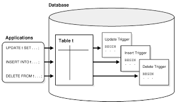

¿Qué son los disparadores ?
Es una acción que la base de datos debe llevar a cabo cuando se produce algún suceso relacionado con la misma. Los disparadores (triggers) pueden utilizarse para completar la integridad referencial, también para imponer reglas de negocio complejas o para auditar cambios en los datos. El código contenido en un disparador, denominado cuerpo del disparador, está formado por bloques PL/SQL. La ejecución de disparadores es transparente al usuario.
-

DISPARADOR DE NIVEL FILA:
se ejecutan una vez para cada fila afectada por una instrucción DML. Los disparadores de nivel de fila se crean utilizando la cláusula for each row en el comando create trigger.
-

DISPARADOR DE NIVEL DE INTRODUCCION
se ejecutan una vez para cada intrucción DML. Por ejemplo, si una única intrucción INSERT inserta 500 filas en una tabla un disparador de nivel de instrucción para dicha tabla sólo se ejecutará una vez. Los disparadores de nivel de instrucción son el tipo predeterminado que se crea con el comando create trigger.
-

DISPARADOR BEFORE Y AFTER
Luesto que los disparadores son ejecutados por sucesos, puede establecerse que se produzcan inmediatamente antes (before) o después (after) de dichos sucesos.
-
DISPARADOR INSTEAD OF
puede utilizar INSTEAD OF para indicar a Oracle lo que tiene que hacer en lugar de realizar las acciones que invoca el disparador
-
.png)
DISPARADOR DE ESQUEMA
puede crear disparadores sobre operaciones en el nivel de esquema tales como create table, alter table, drop table, audit, rename, truncate y revoke. Puede incluso crear disparadores para impedir que los usuarios eliminen sus propias tablas. En su mayor parte, los disparadores de nivel de esquema proporcionan dos capacidades: impedir operaciones DDL y proporcionar una seguridad adicional que controle las operaciones DDL cuando éstar se producen.
-
DISPARADOR EN NIVEL DE BASE DE DATOS
Puede crear disparadores que se activen al producirse sucesos de la base de datos, incluyendo errores, inicios de sesión, conexiones y desconexiones. Puede utilizar este tipo de disparador para automatizar el mantenimiento de la base de datos o las acciones de auditoría.